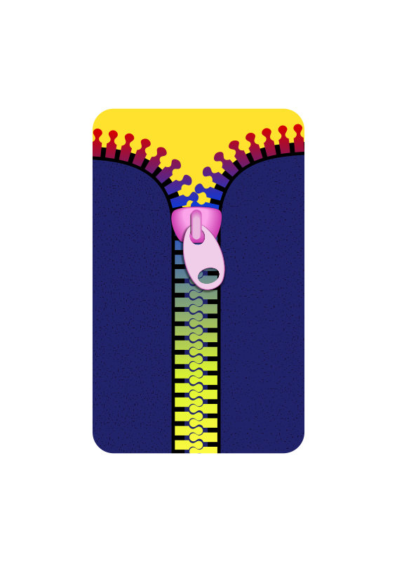

Live DevLog
| 01 Jan 2018 |
| 22:37:14 | FIXED |  Lua != Go Lua != Go |
| 22:36:01 | FIXED | Case Error |
| 22:35:25 | FIXED | Another forgotten "end" |
| 22:33:56 | FIXED | =/== issue (good thing Lua!=C) |
| 22:32:41 | FIXED | Forgotten "end"... Lua != Python |
| 22:27:57 | FIXED | "then" when "do" was expected |
| 22:26:44 | CONFIRMED |  Apparantly it is, since the error I get now is a parse error in a script called after this initiation, so it must be in order now... right? Apparantly it is, since the error I get now is a parse error in a script called after this initiation, so it must be in order now... right? |
| 22:25:33 | FIXED | Unix parse error came up, but I don't know if that is the cause of everything, so let's try |
| 22:23:04 | FAILURE |  Mac appears to get over protective over something.... Either that, or there is just something wrong with the call itself. Mac appears to get over protective over something.... Either that, or there is just something wrong with the call itself. |
| 22:14:18 | LUA |  Maybe a different approach will cover this one up. Maybe a different approach will cover this one up. |
| 22:11:25 | BUG |  "nil", but maybe I just need to read the Lua documentation some more,as pipes were never a fully explored field for me, I gotta admit. "nil", but maybe I just need to read the Lua documentation some more,as pipes were never a fully explored field for me, I gotta admit. |
| 22:09:47 | FIXED | Case error |
| 22:07:15 | OFFTOPIC |  Okay, in Dutch we say "Er is altijd een baas boven baas" Okay, in Dutch we say "Er is altijd een baas boven baas"
|
| 22:01:54 | OFFTOPIC | Well you gotta admit, but THIS is indeed one of the most unbelievable achievements 
|
| 21:54:41 | FIXED | Well I've voided the pre-processor now, and hopefully that will fix this stupid action of mine :-/ |
| 21:46:11 | STUPIDITY |  Maybe that's because this file is not being preprocessed... dork! Maybe that's because this file is not being preprocessed... dork! |
| 21:45:27 | BUG | Pre-Processor apparently took no notice at all that I am currently NOT using Linux |
| 21:44:11 | FIXED | Lua != Go |
| 21:43:07 | FIXED | Illegal table definition |
| 21:41:50 | FIXED | "nil" (and a lot more of those will come, I tell ya). |
| 21:38:16 | FIXED | Iteration parse error fixed in main.lua |
| 21:37:28 | UNIX |  Quick run script, although Ryanna will also need to be able to do that Quick run script, although Ryanna will also need to be able to do that |
| 21:28:21 | MAC |  No regardless if Go supports it or not, I am NOT going to export to PPC. First of all, I know for sure LÖVE doesn't support it, and even if it did, PPC is too old to keep in mind anyway, as far as Mac is concerned, sorry :P No regardless if Go supports it or not, I am NOT going to export to PPC. First of all, I know for sure LÖVE doesn't support it, and even if it did, PPC is too old to keep in mind anyway, as far as Mac is concerned, sorry :P |
| 21:27:25 | MAC | On Mac I'm sure that 64bit is the only way to go, but as 32bit was already deprecated on the moment the switch to Intel began and PPC is not supported at all, no problemo. |
| 21:26:40 | LINUX |  I can at least tell that Linux users having a 32 bit machine have bad luck as Go appears to compile all shit into amd64 format, and thus the game will very likely not be playable on 32bit machines, although I do not even know if löve supports 32bit anyway. I can at least tell that Linux users having a 32 bit machine have bad luck as Go appears to compile all shit into amd64 format, and thus the game will very likely not be playable on 32bit machines, although I do not even know if löve supports 32bit anyway. |
| 21:25:08 | NOTE |  As far as I know jcrx should work for both win32 as win64, but I have no way to tell if this is true or not. All Windows machines I have at my disposal are 64 bit already, you see... As far as I know jcrx should work for both win32 as win64, but I have no way to tell if this is true or not. All Windows machines I have at my disposal are 64 bit already, you see... |
| 21:24:00 | CONFIRMED | The JCRX files appear to be properly exported |
| 21:22:15 | WINDOWS |  Cosmetic change to windows exporting Cosmetic change to windows exporting |
| 21:21:04 | FIXED | Forgotten "}" .... Go!=Python either :P |
| 21:11:39 | FIXED | The Syntax error that came forth from that mistake |
| 21:10:55 | STUPIDITY | Go != Lua, Jeroen |
| 21:09:55 | GO |  As expected Go throws some parse errors. Hopefully nothing I can't handle (since the errors throw are new to me). As expected Go throws some parse errors. Hopefully nothing I can't handle (since the errors throw are new to me). |
| 21:08:11 | RYANNA |  Ryanna should now be able to install jcrx into both the Windows and Mac builds respectively, but only if it's needed. When we're speaking of full zipped builds, the program will then not be needed, and thus not be installed. Ryanna should now be able to install jcrx into both the Windows and Mac builds respectively, but only if it's needed. When we're speaking of full zipped builds, the program will then not be needed, and thus not be installed. |
| 20:53:49 | UNIX | Gathered the jcrx versions for all three main platforms and gathered them in Ryanna, so Ryanna can copy these into the distribution packages accordingly. |
| 20:29:30 | BUG | Tricky1975/jcr6cli#25 |
| 20:09:48 | WINDOWS | And while I was at it I also compiled the JCR6 cli tools for Windows. |
| 19:49:49 | WINDOWS | jcrx compiled for Windows |
| 19:41:50 | LINUX | While I was at this I also compiled the JCR6 cli tools in Linux. Only the converted does not yet work in Linux due to some Linux specific settings I had not yet the time for to set out right, but as Linux uses (just like Mac) a Unix line underground, this should not be that much of an issue. |
| 19:39:26 | LINUX | JCRx compiled in Linux |
| 19:04:27 | SOLVED |  I think I think |
| 18:55:24 | FAILURE | According to manjaro there are NO SOFTWARE PACKAGES AT ALL for Manjaro.... Now, I refuse to believe that. |
| 18:51:33 | GITHUB |  jcrx updated jcrx updated |
| 18:30:08 | GAMEJOLT |  This is however only if the GJ CLI tool ever sees the light, which is not certain at the present time. This is however only if the GJ CLI tool ever sees the light, which is not certain at the present time. |
| 18:29:38 | TODO |  TrickyGameTools/Ryanna#9 TrickyGameTools/Ryanna#9 |
| 18:25:14 | TODO | TrickyGameTools/Ryanna#8 |
| 18:17:37 | OFFTOPIC |  HAPPY NEW YEAR! |
| 18:16:37 | TODO | TrickyGameTools/Ryanna#7 |
| 31 Dec 2017 |
| 13:21:53 | FIXED | That too has been fixed |
| 13:19:30 | BUG | Well ALMOST, as I see the libraries are all dumped in the root, and that is NOT what should have happened. |
| 13:18:21 | CONFIRMED | As far as the current data shows me... it works ;) |
| 13:16:09 | STUPIDITY | Because it was as I though just an act of stupidity (which is mostly the case in ignore actions). |
| 13:15:40 | FIXED | A part of the problem |
| 12:46:20 | STATUS |  But now my real life trouble with the upcoming new year's eve begins, so I'll have to end this session But now my real life trouble with the upcoming new year's eve begins, so I'll have to end this session |
| 12:45:44 | DEBUG |  Quick analysis shows that even the test build doesn't include the imported libs.... This gives me a pointer in where to look, I think.... Quick analysis shows that even the test build doesn't include the imported libs.... This gives me a pointer in where to look, I think.... |
| 12:18:02 | BUG | Let's put it more in detail:
The import requests are simply... ignored. |
| 12:17:36 | BUG | Nope.... clearly not |
| 12:16:53 | GO | But does that mean it works? |
| 12:16:46 | FIXED | All parse errors fixed |
| 12:13:05 | GO | I expected tons of parse errors...
I guess I got them... :( |
| 11:59:45 | GO | Well let's build it and see how many parse errors pop up :-/ |
| 11:57:13 | RYANNA | SHOULD support importing libraries now, although I do expect this to be messy... for now... |
| 10:36:27 | GAMEJOLT | Making sure some spam won't make it in 2018 |
| 01:29:04 | CONFIG |  Xtra backup config Xtra backup config |
| 01:28:58 | BACKUP |  Running Running |
| 00:49:56 | STATUS | I MUST stop now... I'm exhausting myself.... Tomorrow is New Years Eve, which will also tax me a lot. I won't have that much time tomorrow, as with New Year's eve coming up, I have a lot of real-life stuff to take care of, but I will see what I can do. |
| 00:24:34 | FIXED | Faulty tags removed |
| 00:21:55 | OFFTOPIC | How nice.... The last day of the year has begun, eh? |
| 00:21:41 | NOTE | I'll remove those faulty tags later |
| 00:21:31 | SITE |  Added tag OFFTOPIC Added tag OFFTOPIC |
| 00:21:25 | SITE | Added tag OFTOPIC |
| 00:21:19 | SITE | Added tag OFFTOPC |
| 00:21:00 | RYANNA | Lua analyser looking for requests for external libs |
| 00:10:30 | STATUS | Now to make Ryanna able to actually import all these. |
| 00:05:56 | TEST |  Test lib written Test lib written |
| 00:05:48 | GITHUB | Repository set up for Ryanna Libs |
| 30 Dec 2017 |
| 23:29:54 | STATUS | I *SEEMS* to be working now |
| 23:17:44 | FIXED | All parse whi... I means errors |
| 23:13:59 | RYANNA | Windows export implemented |
| 23:13:16 | RYANNA | Release building implemented |
| 22:52:06 | FIXED | AT LAST!!!! |
| 22:49:16 | MAC | The problem with mac is... once a wrong icon, you'll never get rid of it unless you change the file name.
The cashing system within mac is damn headstrong and impossible to reset |
| 22:48:38 | COCKROACH |  The Mac icon keeps bugging me The Mac icon keeps bugging me |
| 22:33:22 | FIXED | Mac Icon not properly copied |
| 22:27:45 | COCKROACH | But I get something else |
| 22:27:27 | FIXED | this |
| 22:23:44 | COCKROACH | Although I see the Go Compiler still has something to wine about. |
| 22:23:26 | FIXED | Anyway it goes without saying that it should be fixed now |
| 22:21:22 | STUPIDITY | Right, that was stupid |
| 22:16:36 | DEBUG | Let's add this line and maybe we can find out why |
| 22:16:22 | SITE | Added tag DEBUG |
| 22:12:10 | FIXED | Unzip not unzipping anything? |
| 22:09:57 | FIXED | Project title typo |
| 22:08:08 | RYANNA | Should now be able to create a Mac build |
| 20:03:08 | STATUS | (Now it would be funny if the kickoff of the project itself would be on Jan 1st) :) |
| 20:02:15 | STATUS | The biggest issue in Ryanna is now TrickyGameTools/Ryanna#5 -- Once that's been taken care of, I only need to write the routine which creates the actual distributions and we can kick off this project AT LAST :) |
| 19:49:49 | FIXED | Tricky1975/jcr6cli#23 -- This would really spook up the test game process, so I'm glad I tackled that one! |
| 19:49:14 | FIXED | That's fixed |
| 18:46:26 | BUG | Right, no files are being queued for gathering, eh? |
| 18:35:22 | TODO | Issued this as a "to do" on the issue tracker as TrickyGameTools/Ryanna#5 |
| 18:30:17 | RYANNA | Ryanna can now gather all files, however, it does not yet import external libraries |
| 17:27:27 | CONFIRMED | Zipping the base files works |
| 17:25:40 | ZIP | The zip call in Ryanna works now |
| 17:25:23 | SITE | Added tag ZIP |
| 16:55:00 | CONFIRMED | And Ryanna's tags are properly converted |
| 16:50:00 | ENHANCEMENT |  And better error catching on this department And better error catching on this department |
| 16:49:46 | SITE | Added tag ENHANCEMENT |
| 16:49:26 | FIXED | Done |
| 16:47:59 | BUG | Now I need to make sure .lua is added here |
| 16:47:15 | FIXED | Okay, part of the problem is fixed. The files are being written now |
| 16:29:04 | BUG | But for some reasons the files it needs to write in the swap dir remain somewhere stuck in oblivion... |
| 16:28:33 | RYANNA | And Ryanna asks for the main file |
| 16:28:24 | RYANNA | Temp directories created |
| 15:44:42 | RYANNA | The pre-scripts all Ryanna projects will need have been written, however I can only test once the Ryanna building routine fully works, if these scripts actually work, so I'm expeciting dozens of crashes! |
| 00:41:57 | FIXED | TrickyGameToolsRyanna#2 |
| 00:41:46 | LUA | setting up the base Lua scripts for Ryanna |
| 29 Dec 2017 |
| 23:41:10 | TODO | TrickyGameTools/Ryanna#1 |
| 22:18:42 | RYANNA | Will now ask the version number of LÖVE to work with. |
| 20:53:31 | FAILURE | Total freeze |
| 19:49:17 | RYANNA | This tag will only be used for the builder named Ryanna, not for the character, although I realise confusion is bound to happen due to the builder being named after her. |
| 19:48:19 | SITE | Added tag RYANNA |
| 19:47:12 | LINUX | In order to broaden my horizons in the field fo Linux I'm now downloading Manjaro in order to see if that is a better kind of Linux to work with.
Up until now I've never seen a user-friendly version of Linux.
Manjaro claims to be, but after all the horrors I've been through I seriously doubt it. |
| 19:45:56 | GO | For now I've most of all worked on the Ryanna builder. At this moment it's still only collecting data it needs to set something up. |
| 11:15:18 | GO | Expanded the Ryanna builder.... It's still only working out on data though, not doing any actual building |
| 00:49:17 | NOTE | And with that it's decided that LÖVE shall be my engine.
I've already set out most things to make it go well. The only "fear" I have is the event regulation, but even for that I have my ideas, so not to worry. |
| 00:48:11 | NOTE | I must note that if I ever resume Mörker, it will most likely also be done with Ryanna. |
| 00:47:44 | GO | A base has been set up for the Ryanna builder I'll need for this game.
It'll take awhile before this is all built, though. |
| 28 Dec 2017 |
| 17:29:57 | GO | JCRX has been updated with the typeout command |
| 17:14:07 | GO | I did now officially replace my BlitzMax written tools by the ones written in Go |
| 16:44:39 | ART |  Easy and hard mode icons Easy and hard mode icons |
| 16:37:07 | GO | JCRX can better become a .dll or .so? I couldn't agree more, but I'll need your help for that. :P |
| 16:36:11 | GO | Well JCR itself will remain a GO project as it will be impossible to script JCR6 in Lua... At least not with the APIs LOVE2D provides. Perhaps if LOVE2D ever gains full support for that I can comply.
The tool JCRX will be included with the Windows and Mac versions of the game.
In Linux JCRX will become a dependency, for which I'll need to study what the best way will be to provide it. |
| 16:32:37 | GAMEJOLT | Character profiles written |
| 16:32:30 | SITE | Added tag GAMEJOLT |
| 15:55:46 | LOVE2D |  It's not 100% sure but my latest experiments do show it might be best if the game is not created with the bubble project (although bubble might have its purpose in more stable things I'm planning to do. If somebody knows what I can do to stabalize it, NOW is the time to make yourself heard. It's not 100% sure but my latest experiments do show it might be best if the game is not created with the bubble project (although bubble might have its purpose in more stable things I'm planning to do. If somebody knows what I can do to stabalize it, NOW is the time to make yourself heard. |
| 15:54:26 | SITE | Added tag LOVE2D |
| 15:54:16 | DOCUMENTATION |  Not the best tag for this, but I've set up a list of tools for the game Not the best tag for this, but I've set up a list of tools for the game |
| 27 Dec 2017 |
| 14:32:57 | STATUS | I also have Cynthia Johnson to worry about... A few things are fortunate. I can use Go to extend Love2D with my JCR system. Not ideal, but what works that works. If Love2D must cover up what Go can't handle then it must be that way, but as Love appears to have no support for Viewports, or at least not as far as I can find, this project is in Love2D already endangered before it has begun.... Figures. |
| 14:23:38 | NOTE | As I am not sure if continuing this project in Go is a good idea I'll let this project rest for now.
I'm not giving up yet, but I need you to understand that the game I'm about to write is an RPG. That is over one year work. If an unstable engine (as GO-SDL now proved to be, sorry) would force me to switch engines half way then it can depending how much work has already been done on the game, render months of work completely worthless.
This is a no-budget project, but I don't want this to happen, and since I am on my own when it comes to problems like these, I'm not sure if I should risk this. |
| 26 Dec 2017 |
| 19:03:31 | NOTE | For now I've deactivated Tricon. I really need to find out what causes the error to happen.
Problem is that I'm not surrounded with fellow coders, so that makes me pretty much alone in my search. |
| 18:41:14 | GO | Luckily Bubble has been set up in a way that switching underlying libraries is easy, but I can't tell what this will mean for the current command set up. |
| 18:40:09 | CONFIRMED | At least the "Static" engine works, but everything is uncertain at this point due to the trouble with the ttf module.
If it's solely a ttf issue I can live with this, if not, I'll have to see if there's more than just sdl-go |
| 17:52:38 | FIXED | I hope it's still worth it buth the JCR unable to find scripts bug has been fixed |
| 13:08:53 | COCKROACH | It's back! |
| 13:04:37 | HUH |  "Entry [Script/Main.lua] was not found in the requested resource." "Entry [Script/Main.lua] was not found in the requested resource."
The file is there, I know it |
| 13:04:24 | SOLVED | Okay, the Go guys themselves brought me the solution... Or at least I hope so. Be more careful with how to position "defer" commands.... |
| 12:10:41 | HUH | Another huh, as it worked before and now suddenly out of the blue it doesn't anymore. |
| 10:32:46 | HUH | And suddenly stuff works the way it was intended.... Do you follow?
At least I don't. |
| 10:32:28 | COCKROACH | However Go kept on panicking |
| 10:32:16 | SITE | Added tag COCKROACH |
| 10:32:10 | FIXED | An error causing panics on JCR6 errors |
| 01:42:42 | SITE | Ah, the settings finally work |
| 01:22:56 | BACKUP | Running |
| 01:22:21 | ART | 
And here she is: Ryanna, the heroine of the story...
That is if I can get the engine to work at all ;)Isn't she beautiful? :P |
| 01:20:13 | SITE | Added tag CHARACTER |
| 00:38:45 | NOTE | Of course, I still cannot test if everything works the way it should, but at least I can now begin to start to write some test programs |
| 00:37:53 | FIXED | All parse errors |
| 00:32:59 | BUBBLE |  Event api added Event api added |
| 25 Dec 2017 |
| 22:39:18 | STATUS | Focus now lies on events, as they are needed to add interactivity to the game. |
| 22:33:24 | FIXED | Tons of stupid parse errors |
| 22:28:47 | BUBBLE | System API set up |
| 21:51:55 | DOCUMENTATION | Variables of identify.gini |
| 21:18:29 | GO | And the executable building source has been adapted, and should now automatically pick up all flowing modes as they arrive. |
| 21:16:46 | STATUS | With that some first steps in setting something up is possible now, however as the events reader is not yet present you do not have possibilities for interaction. |
| 21:15:17 | BUBBLE | The "Static" game mode has been put in. Now it only does one thing.... It runs the "bubble_init" function if it exists and after that it will execute the "bubble_main" function (and cause a crash if it doesn't exist), and after that Bubble will just quit (after unloading all the crap it has). |
| 20:22:56 | BUBBLE | A system added that allows to add extra scripts easily |
| 19:49:41 | SITE | Added tag LUA |
| 19:43:29 | NOTE | Well they are added now for later usage ;) |
| 19:43:14 | SITE | Added tag MUSIC |
| 19:43:10 | SITE | Added tag AUDIO |
| 19:43:06 | SITE | Added tag ART |
| 19:17:54 | BACKUP | Running |
| 19:17:45 | SYSTEM |  Restart complete (yeah, that took awhile, huh?) Restart complete (yeah, that took awhile, huh?) |
| 18:13:30 | STATUS | And in the meantime I can watch the circus of Monte Carlo on TV which is always broadcast on Netherlands 1 on 25 dec ;) |
| 18:12:59 | SYSTEM | However before I can get to that I'll first need to reboot my mac, as there are some "dead files" causing many tools to malfunction. |
| 18:12:20 | STATUS | Well, I'm almost there to prepare the bubble engine so that something can at least be created with it. |
| 18:11:39 | TODO | Cooking my food ;) |
| 18:11:25 | GITHUB | Made sure everything has been pushed |
| 18:11:13 | SITE | Added tag GITHUB |
| 18:08:58 | SITE | Added tag SYSTEM |
| 17:53:32 | DOCUMENTATION | Updated command reference (will need a giant overhaul once the engine is done... I swear). |
| 17:52:09 | HUH | I really don't know if I'm gonna use it, but this clipart was too good to pass up :P |
| 17:51:52 | SITE | Added tag HUH |
| 17:49:05 | SITE | Added tag DOCUMENTATION |
| 17:48:58 | FIXED | Parse errors |
| 16:54:32 | GO | Base commands for Lua |
| 14:45:14 | SITE | Added tag JUDGMENT |
| 14:42:11 | STUDY |  Random numbers in Go Random numbers in Go |
| 14:04:53 | FAILURE | I wish I could say the same for ANY system at all using a web browser |
| 14:04:32 | CONFIRMED | As far as I can test it now it works |
| 13:45:40 | TEST | Expanded my test code so I can actually test things out |
| 12:17:16 | GO | A basic image handler has been written now.
It SHOULD work, but I could not test it yet, which will happen soon |
| 01:28:10 | STATUS | Well, time to sleep.... 
Merry Christmas |
| 01:26:15 | NOTE | But all I know is that the compiler doesn't whine. That doesn't automatically mean the code is fine :-/ |
| 01:25:51 | FIXED | Some should be fixed |
| 01:08:28 | NOTE | That makes me sure my current code is not gonna work right now, but that doesn't matter... I'll sort that out later ;) |
| 01:06:48 | STUDY | Okay... Working with pointers is slowly getting clear now... |
| 00:39:08 | GINI |  Thanks to GINI Thanks to GINI |
| 00:39:03 | GO | Hotspot support |
| 00:28:33 | GO | Set up a quick image loader routine. No clue if it works, but at least there are no parse errors |
| 24 Dec 2017 |
| 22:48:40 | FAILURE | Ah yeah, some mac dead files... I guess the backup will have to wait until I could completely restart MacOS |